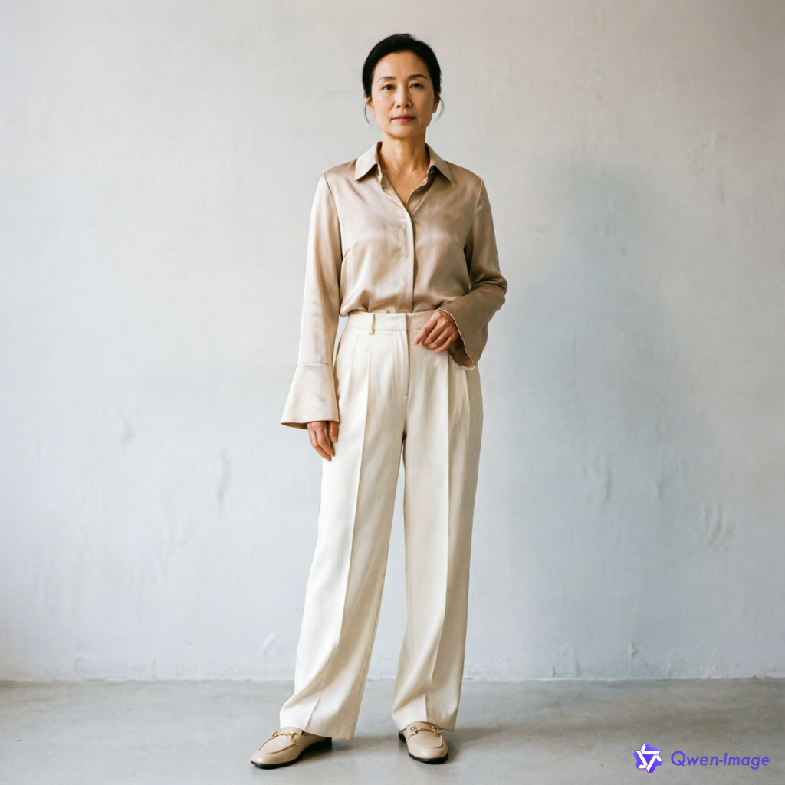
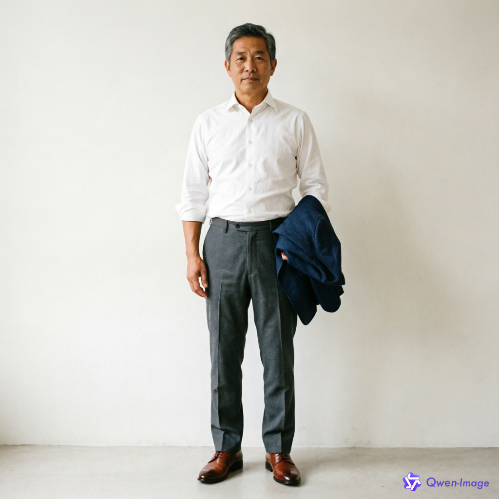
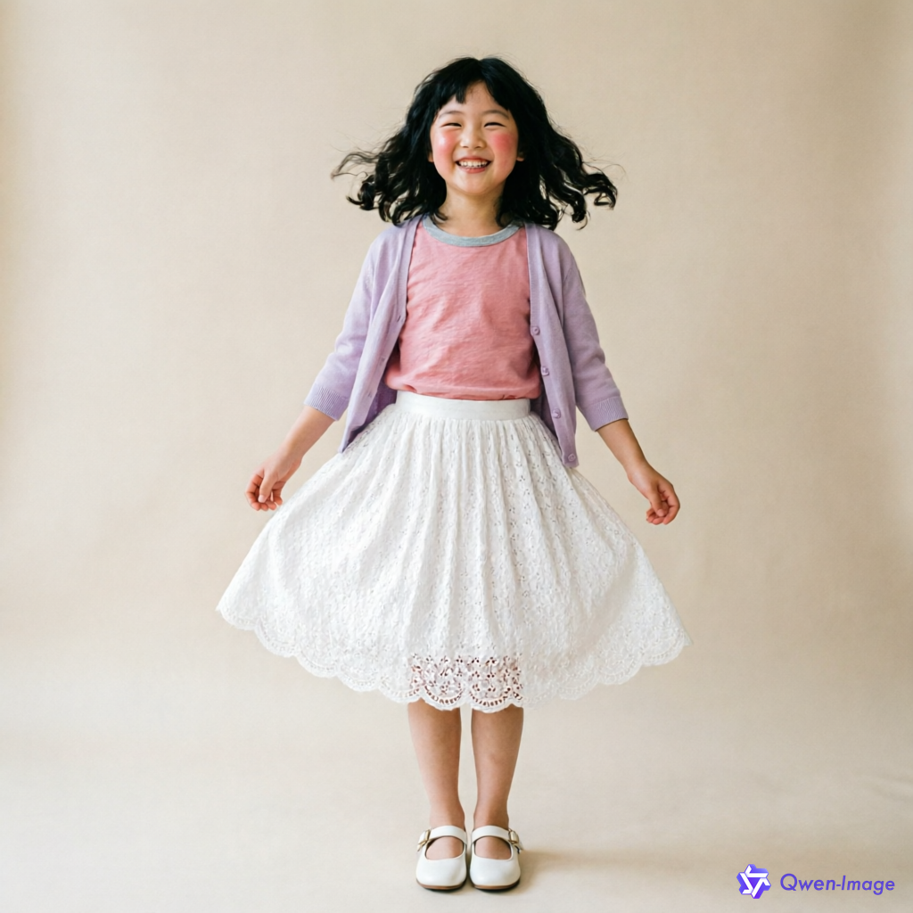
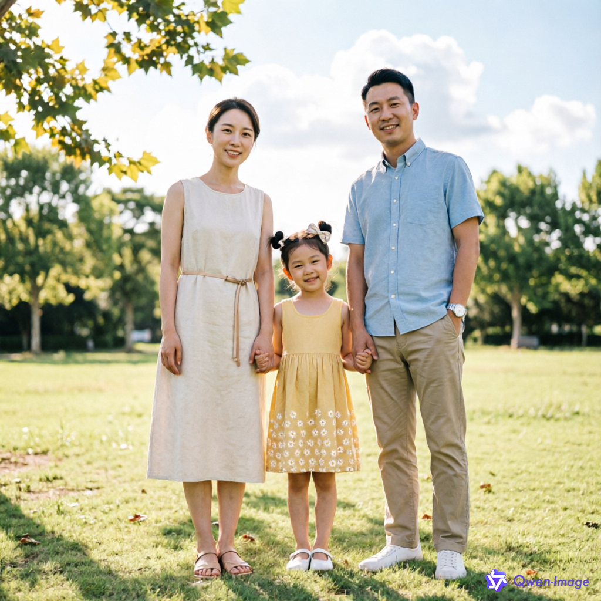

基于 PocketBase + Golang + Bailian CLI 的家庭穿搭智能推荐系统。每周六早上七点，为家庭每个成员自动生成适合季节和场景的穿搭方案，并生成虚拟试穿效果图。
查看实际案例 GitHub 仓库记录每位家庭成员的身材、风格偏好、喜欢/避免颜色、尺码等信息，支持在 Web 管理页随时更新。
根据季节、天气、场景自动从商品库中挑选合适的单品，由 Bailian 大模型生成搭配说明。
从季节适配、场合适配、色彩协调、风格一致、搭配完整度五个维度评分，通过后才发布。
调用 Bailian 图像生成能力，为每个家庭成员生成真实的穿搭效果图。
内置全屏展示页面 `/tv.html`，无需翻页，适合在家庭电视上展示本周穿搭。
系统每周六早上 7 点自动运行，生成新的穿搭方案并写入中文 Markdown 文档。
以下图片均由 Bailian CLI (`bl image generate`) 实际生成，不是占位图。

米白色真丝衬衫 + 高腰阔腿西装裤 + 米色乐福鞋，适合夏季周末聚会。

白色商务衬衫 + 深灰色休闲西裤 + 藏青色西装外套，适合通勤与商务。

粉色纯棉 T 恤 + 白色蕾丝半身裙 + 浅紫色针织外套，活泼甜美。

温馨的三口之家家庭穿搭合影
用户 / 家庭成员
|
v
Web 管理页 / 电视大屏
|
v
PocketBase 后端 (Go)
|
+-- 家庭成员数据 (st_family_members)
+-- 商品库 (st_wardrobe_items)
+-- 每周穿搭 (st_weekly_outfits)
|
+-- Bailian CLI 文本生成 (搭配说明)
+-- Bailian CLI 图像生成 (试穿效果图)
|
+-- 多维度考评策略
+-- 定时任务 (每周六 07:00)
克隆仓库，构建并运行，即可体验完整的家庭穿搭推荐系统。
前往 GitHub